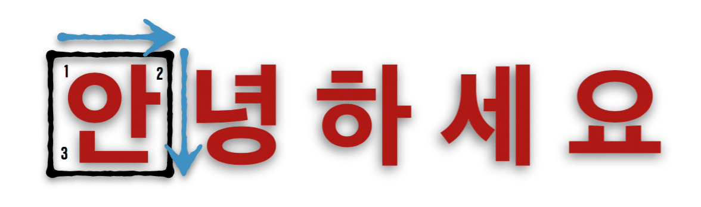
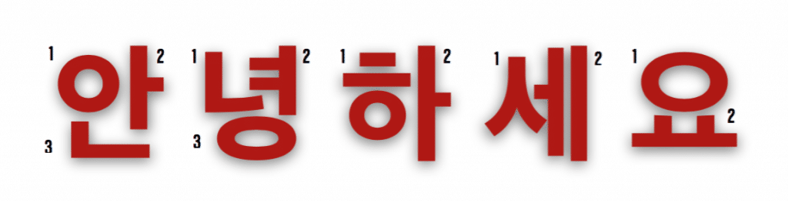

In this section, we will cover Korean Word Structure, Special Vowel Combinations, and Romanization.
In Korean, you read left to right, top to bottom just like English. However, the words are written as characters in invisible “boxes” that structure how letters are connected. Each “box” is a syllable, and can be combined to make one word. Let’s explore some examples below:

This means “hello” in Korean. The first syllable is boxed so we can look at the connection of familiar letters. Notice how the order “1,2,3” shows that we are writing left to right, top to bottom.

Here is the order of writing the entire word “hello”, with every syllable boxed. The pronunciation is “an-nyeong-ha-sae-yo”. While there are five boxes to represent the five syllables, we can see that some boxes contain three letters, while others contain two.
Before getting into rules, let’s quickly review our consonants and vowels:
Review of Base Consonants
| ㅂ | ㄱ | ㄷ | ㅎ | ㅈ | ㄹ | ㅁ |
|---|---|---|---|---|---|---|
| ᄋ | ᄏ | ᄐ | ᄎ | ᄑ | ㅅ | ㄴ |
Review of Base Vowels
| ᅩ | ᅥ | ᅮ | ᅡ | ᅭ |
|---|---|---|---|---|
| ᅧ | ᅲ | ᅣ | ᅳ | ᅵ |
From now on, we will refer to “boxes” as syllables, as that is what they are.
| RULE: Syllables ALWAYS start with a consonant, with a mandatory vowel following it. Some syllables can end in consonants while others don’t need to. |
|---|
Remember, “ㅇ” is a consonant that starts a syllable, but it is silent unless it ends a word!
Examples:
Take a few minutes to let this rule sink in. Try combining various letters into boxed syllables and explore the sounds they make!